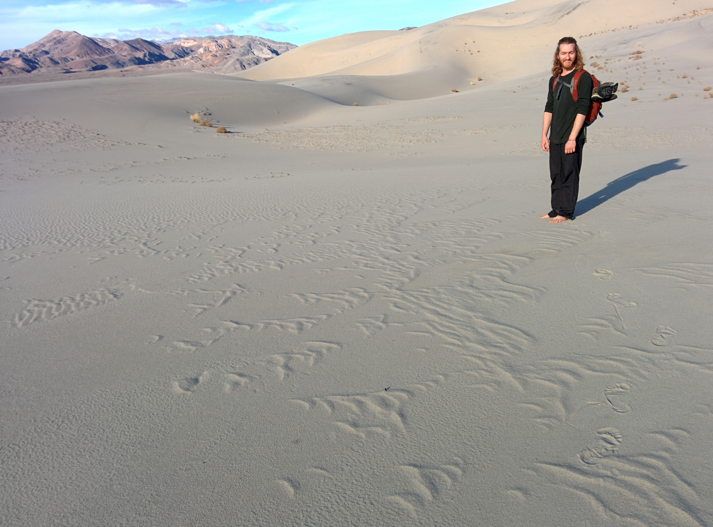

I was a graduate student in the mathematics department studying mathematical physics, especially quantum mechanical aspects of symmetry and applications of topological methods. I finished in December 2018. Now I am a Zuckerman Fellow at the Weizmann Institute of Science.
A toy for drawing wallpapers, using one of the 17 2d crystal symmetry groups, randomly selected every time you load the page. Move the cursor while holding the space bar to draw. Press c to toggle colors.
A visualization of the 3d Hopf fibration. The sketchpad is identified with the base of the fibration. Use the mouse to draw on the sketchpad and to control the camera.
A simulation of Glauber dynamics in the 2d XY model. Use h to raise the temperature, c to lower the temperature. Opening the console and pressing p displays all controls.
An FX chain from your microphone to your headphones. Spacebar is the panic button. Beware of feedback loops.
